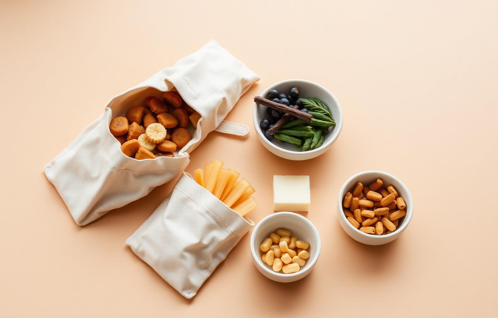
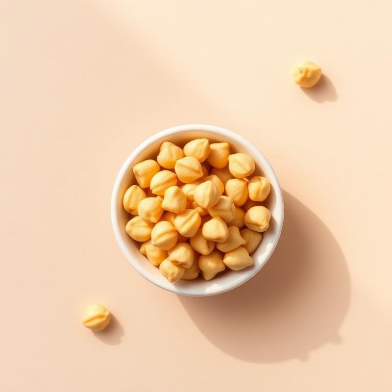

HECHO CON PACIENCIA
Botana saludable, ingredientes simples
Conoce los productos saludables de Maíz & Raíz, sin aditivos ni colorantes.
¡Descubre una nueva
forma
de botanear!

Nuestros Productos
Ver todo →
Chips de Jicama
$55 MXN
100gr
Title
Price
Weight
Title
Price
Weight
Title
Price
Weight